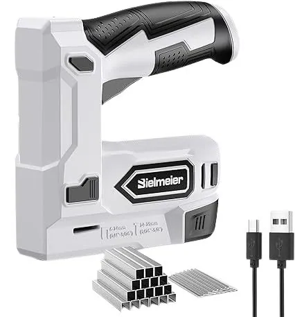
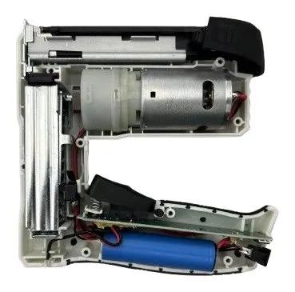
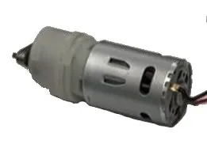
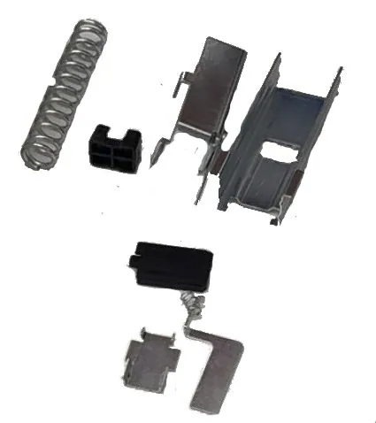
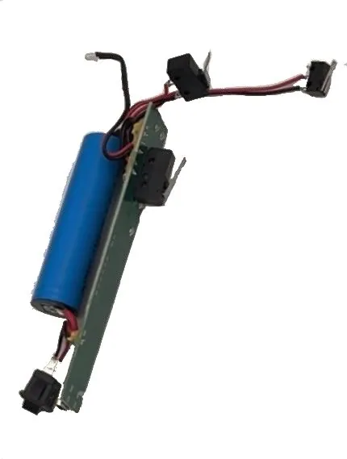
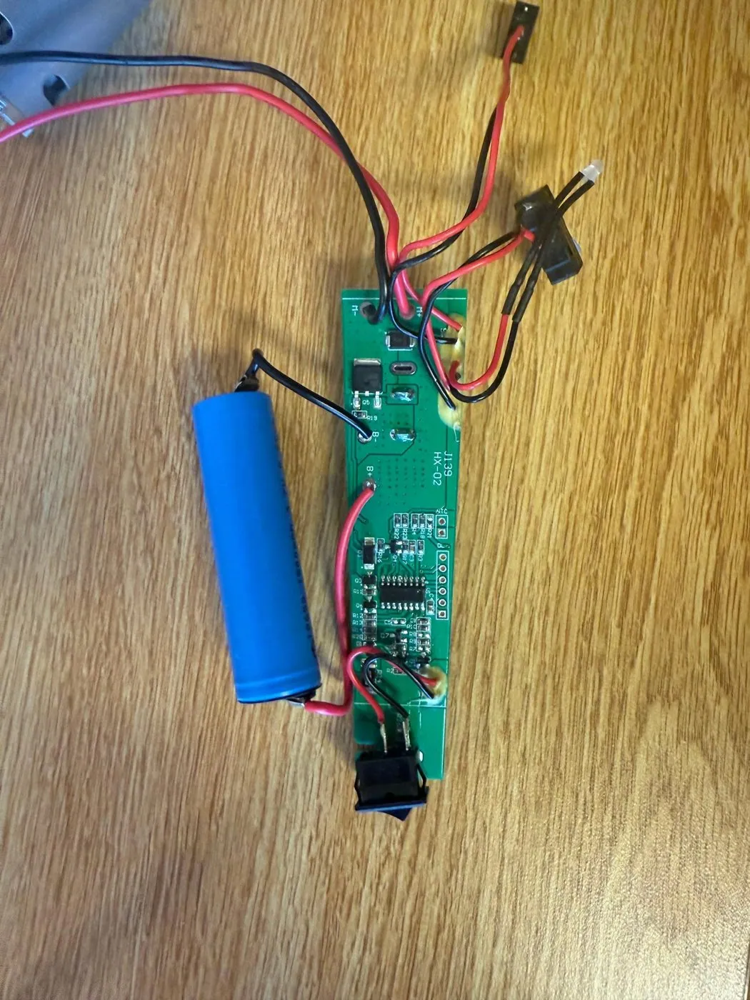
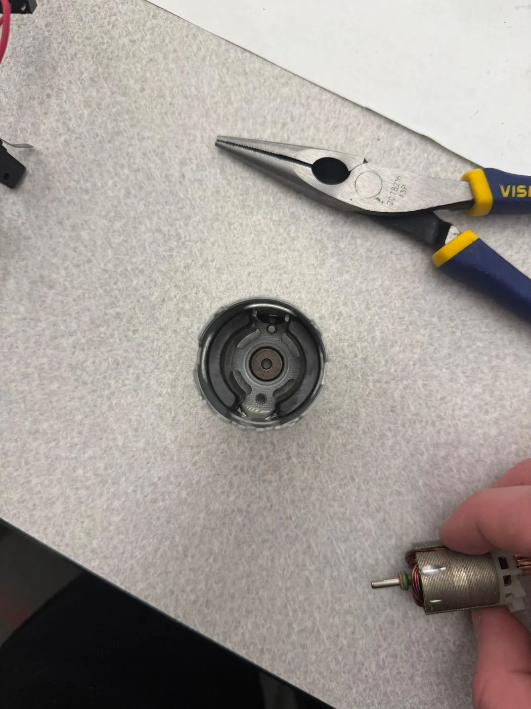
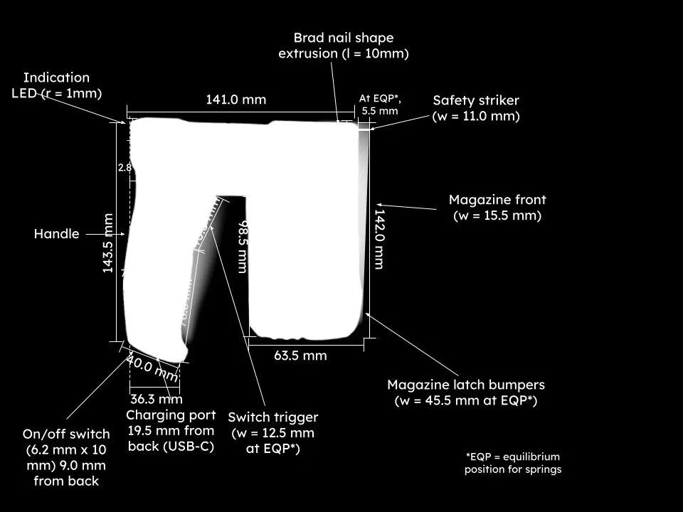

Cordless Staple Gun Teardown
ME 40 · Project 1 · with Lawer Nyako & Marcus Sang
☰ Tags
Product decompositionMechanismsDFM
📚 Course
ME 40 Engineering Design
📅 Term
Spring 2025
🔧
ME 40’s first project was a full product teardown. We took apart a cordless staple and nail gun, documented every part with its material and manufacturing process, worked out how the mechanism turns battery charge into a driven staple, and studied how the design tells the user how to use it.

Product facts
- 4 V lithium-ion battery, charged over USB-C in about 2 hours.
- Up to 850 firings per charge, at up to 50 shots per minute.
- 50-fastener quick-release magazine for staples or brad nails.
- Power switch, battery and armed indicator light, and a safety striker that prevents firing in the air.
How It Works

- Pulling the trigger with the safety pressed against a surface lets the PCB send battery power to a brushed DC motor, which spins fast with low torque.
- A two-stage planetary gearbox trades that speed for torque.
- The gearbox turns a rotating lever arm that pushes back a casing, compressing the main spring.
- When a tab on the casing reaches an actuator switch, the motor stops and the spring releases. Its energy drives the punch down its guides into the staple.
- A spring-loaded pusher in the magazine keeps the next fastener in position for the next shot.



Product Decomposition

Part, material and process table (excerpt)
| # | Part | Qty | Material | Manufacturing process |
|---|---|---|---|---|
| 1–2 | Case, left and right | 2 | Plastic | Injection molding |
| 3 | Case screws | 8 | High-strength steel | Wire feeding, cutting, heading, thread rolling, heat treatment, coating |
| 4 | Trigger | 1 | Plastic | Injection molding |
| 5 | Trigger spring | 1 | Steel | Coiling, heat treating, grinding, coating |
| 6 | Actuator switches | 2 | Aluminum and plastic | Injection molding, casting, cutting, assembly |
| 7–8 | Punch mechanism and guide | 2 | Sheet steel | Cutting, bending, grinding |
| 10 | Main spring | 1 | Steel | Coiling, heat treating, grinding, coating |
| 11 | Spring dampener | 1 | Rubber | Injection molding |
| 12–14 | Safety striker, guide and linkage | 3 | Sheet steel | Cutting, bending, grinding |


Designing for the User

The tool uses affordances to explain itself:
- The handgun-shaped grip tells a first-time user where their hand and index finger go.
- The rest at the base of the handle positions the palm.
- The spring-loaded safety at the nose lights an indicator when it is pressed, so the user knows the tool is armed. The same light shows charging.
- The power switch and charging port sit together at the bottom of the handle, out of the way during use.
- The only exposed springs are on the magazine-release bumpers, which hints that squeezing them does something.
- A small molded nail shape shows which way fasteners load.
We also wrote a user memo (homeowners, DIYers and trades in carpentry and upholstery), a quick-start guide and first-use documentation covering unboxing, setup and cleanup.